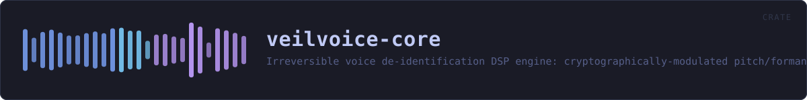

veilvoice-core
Irreversible voice de-identification DSP engine: cryptographically-modulated pitch/formant scrambling with preserved intelligibility.
reference · the same page on GitHub
The security-critical heart of VeilVoice: an irreversible, cryptographically modulated voice de-identification engine.
What it guarantees (and what it deliberately does not)
VeilVoice destroys the biometric voiceprint — fundamental pitch, formant structure, timbre, accent and micro-timing — so that neither software nor a human can re-identify the speaker or reconstruct the original waveform. It does not hide the words: intelligibility is preserved on purpose, because a scrambler you cannot understand or transcribe is useless. "Fill the whole spectrogram with white noise" and "stay transcribable" are mutually exclusive; see docs/WHITEPAPER.md for the full argument.
Accent
[AccentConfig] additionally maps every speaker onto one canonical pitch register, vocal-tract scale and long-term spectrum, so the melody and colour of an accent — along with two of the strongest biometric features there are — do not survive. What no signal-level transform can remove is the segmental side of an accent: which phonemes were actually produced. At that level the accent and the words are the same thing, and changing it means changing what was said. See [AccentConfig] for the full argument and the limit, which the whitepaper must state rather than overclaim.
Why it is one-way
Every STFT frame has its measured phase discarded and resynthesised from scratch (see [spectral]). The original excitation phase — which encodes the precise waveform and a speaker's micro-timing — is never stored and never reused, so no downstream process can recover it. On top of that, the pitch and formant shifts are driven every frame by a ChaCha20 CSPRNG ([modulation]) whose seed never leaves the process and is zeroized on drop, so there is not even a single fixed transform to invert.
Example
use veilvoice_core::{Deidentifier, DeidConfig};
let mut deid = Deidentifier::new(DeidConfig::default()).unwrap();
let input = vec![0.0f32; 4800];
let output = deid.process_vec(&input);
assert_eq!(output.len(), input.len());
// Live processing cost, e.g. for a latency read-out:
let _ms = deid.stats().last_block_ms();HOW THE CRATE FITS TOGETHER
Every arrow is a crate:: or super:: path one module actually uses, read out of the source rather than drawn by hand.
The same graph as Mermaid source
%%{init: {"theme":"base","themeVariables":{"background":"#1a1b26","primaryColor":"#1f2335","primaryTextColor":"#c0caf5","primaryBorderColor":"#7aa2f7","secondaryColor":"#16161e","tertiaryColor":"#16161e","lineColor":"#737aa2","textColor":"#c0caf5","mainBkg":"#1f2335","nodeBorder":"#7aa2f7","clusterBkg":"#16161e","clusterBorder":"#2f3549","fontFamily":"ui-monospace, SFMono-Regular, Consolas, monospace","fontSize":"14px"}}}%%
flowchart TD
n_lib(["lib.rs<br/>68 lines"])
n_accent["accent.rs<br/>677 lines"]
n_chain["chain.rs<br/>856 lines"]
n_effects["effects.rs<br/>214 lines"]
n_modulation["modulation.rs<br/>280 lines"]
n_pitch["pitch.rs<br/>274 lines"]
n_spectral["spectral.rs<br/>428 lines"]
n_stft["stft.rs<br/>246 lines"]
n_window["window.rs<br/>91 lines"]
n_accent --> n_pitch
n_accent --> n_spectral
n_chain --> n_accent
n_chain --> n_effects
n_chain --> n_modulation
n_chain --> n_pitch
n_chain --> n_spectral
n_chain --> n_stft
n_spectral --> n_accent
n_spectral --> n_pitch
n_stft --> n_windowThis site loads no third-party script, so it cannot run Mermaid; the diagram above is the same nodes and edges drawn by the generator instead. GitHub renders the source below directly.
THE FILES
| File | Lines | What it is |
|---|---|---|
accent.rs | 677 | Accent and speaker-trait neutralisation. |
chain.rs | 856 | The assembled de-identification chain and its live performance statistics. |
effects.rs | 214 | Light time-domain effects applied after resynthesis. |
lib.rs | 68 | The security-critical heart of VeilVoice: an irreversible, cryptographically modulated voice de-identification engine. |
modulation.rs | 280 | Cryptographically-seeded modulation of the effect parameters. |
pitch.rs | 274 | Monophonic fundamental-frequency tracker (decimated YIN). |
spectral.rs | 428 | Frequency-domain de-identification transform. |
stft.rs | 246 | Streaming short-time Fourier transform with overlap-add resynthesis. |
window.rs | 91 | Analysis and synthesis windowing, and the one constant that keeps overlap-add honest. |
spectrum_report.rs | 99 | Where do the output partials actually land? |
veil_a_buffer.rs | 45 | no module documentation yet |
hostile_audio.rs | 353 | The engine against input that is not well-behaved audio. |